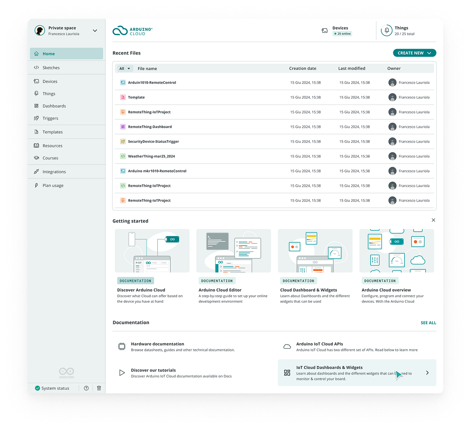
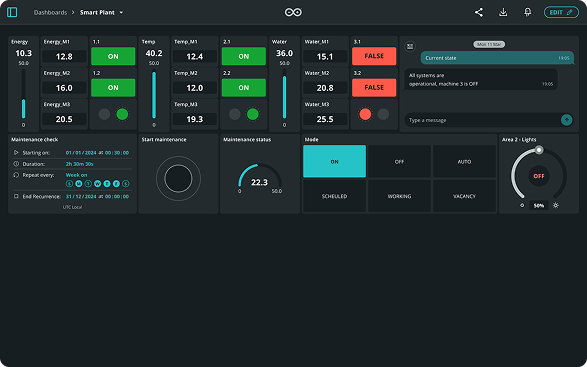
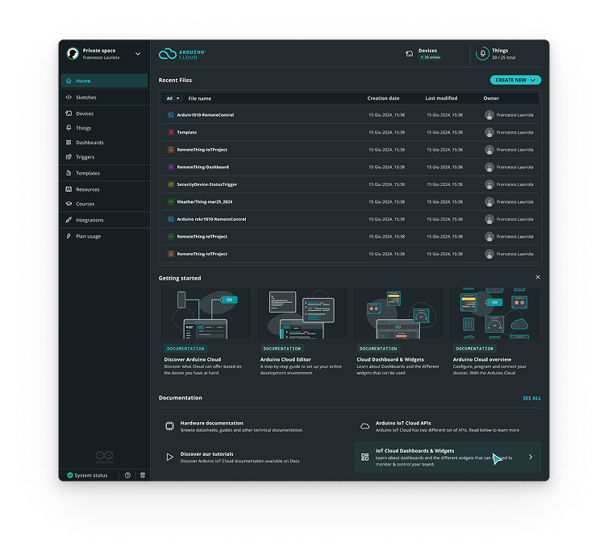
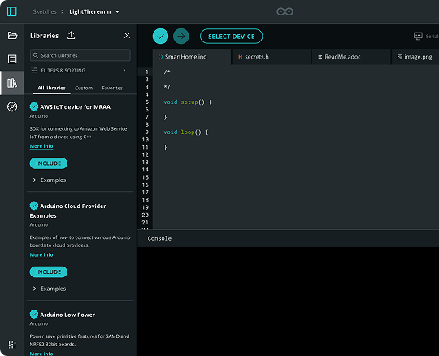
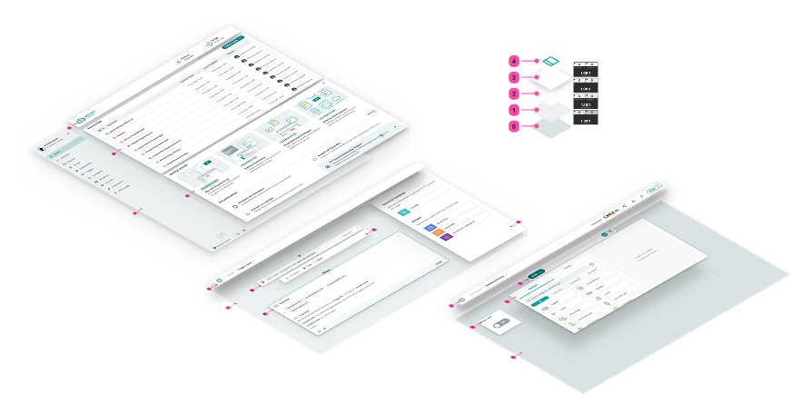
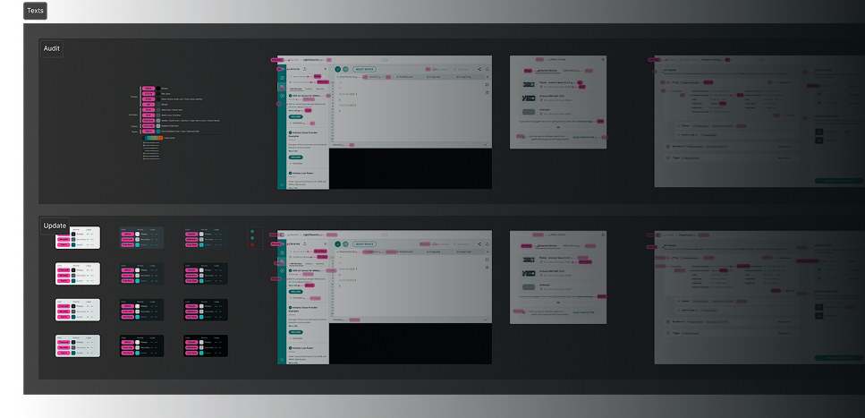
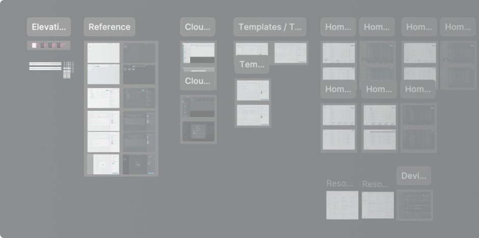

Arduino Cloud
Arduino Cloud is a powerful platform that enables users to connect, program, and monitor their IoT devices effortlessly.
However, the existing UI lacked a Dark mode — a feature that's become a standard in the 2020s. This was especially important for our dedicated users who spend long hours in front of the screen, immersed in their projects.

before — light onlyThis project wasn't just about inverting colors; for me, it was an opportunity to refine the overall UI coherence, improve accessibility, and build a scalable design solution that would minimize maintenance efforts in a team-constrained environment.
- More Consistent UI across different sections of the platform, with the number of colors reduced to the essential.
- Improved Accessibility, ensuring compliance with contrast guidelines.
- Better usage of accent color for hover & selection to characterize more the UI.
- Easy Maintenance, reducing the effort needed to scale or modify the system in the future (considering the absence of a dedicated design system team).

dashboard
home
editorWe were already using the concept of surfaces in our UIs, but this was not standardized, so the first step was to analyze the current state.
And the same thing was done for texts, icons, and hover & selected states.
With accessibility always in mind.

surfaces, standardised
every step measuredOnce we defined surfaces and color contrasts, we started applying these ideas to the numerous sections of the app, and iterating multiple times, in order to respond to every case.
This included multiple syncs with FE devs, in order to set up tokens.
We ended up with 2 versions, which we validated using an internal A/B test.

every section, several passes